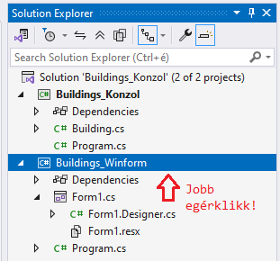
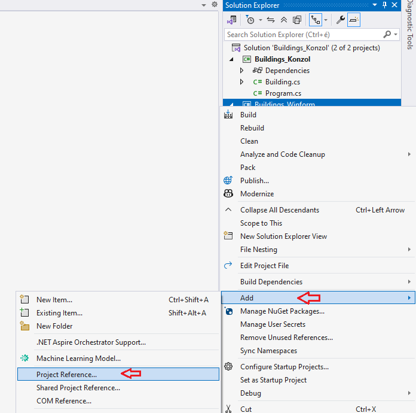
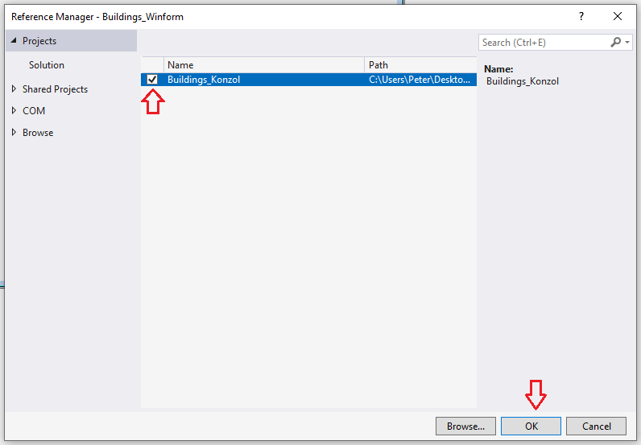

Konzolos és winformos projektek összekötése
Kattintsunk a jobb egérklikkel a
Building_Winform
projekten.

Válasszuk az
Add
és
Project Reference...
lehetőségeket.

Jelöljük ki a négyzetet. Majd
OK
.
